Лабораторная работа 1
Выполнил Мизинов Михаил НКАбд-04-25
Целью данной работы является приобретение практических навыков установки операционной системы на виртуальную машину, настройки минимально необходимых для дальнейшей работы сервисов.
Запускаю VirtualBox:
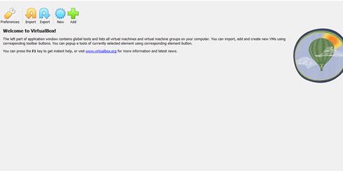
Нажимаю кнопку new, задаю имя машины и добавляю новый привод оптических дисков и выбираю образ:
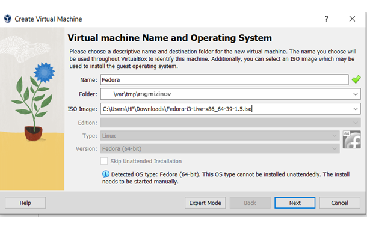
Указиваю размер основной памяти виртуальной машины - 2048 МБ и задаю 2 процессора:
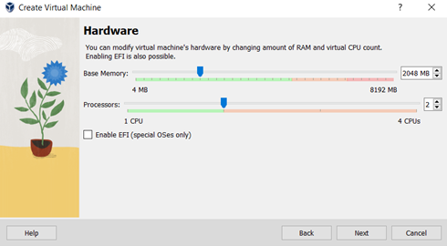
Задаю размер диска — 100 ГБ:
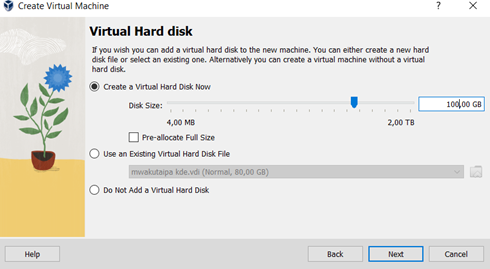
Задаю машину видеопамять 128МБ и запускаю её:
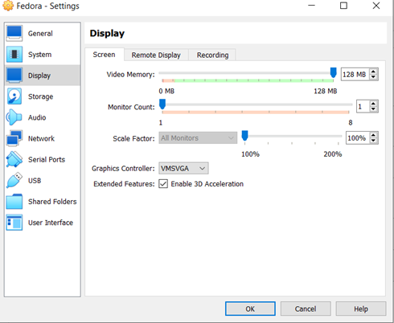
Появился интерфейс начальной конфигурации. Нажимаю Enter для создания конфигурации по умолчанию и, чтобы выбрать в качестве модификатора клавишу Win. Нажимаю комбинацию Win+Enter для запуска терминала. В терминале запускаю liveinst:
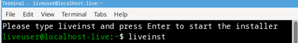
Выбераю язык интерфейса и перехожу к настройкам установки операционной системы:
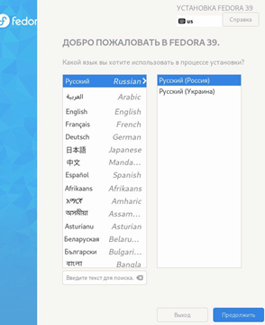
Место установки ОС оставляю без изменения:
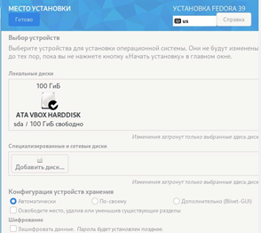
Установляю имя и пароль пользователя:
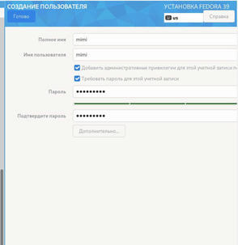
После завершения установки операционной системы перезапускаю виртуальную машину. Далее вхожу в ОС под заданной мной при установке учётной записью. Нажимаю комбинацию Win+Enter для запуска терминала. Переключаюсь на роль супер-пользователя и обновляю все пакеты:
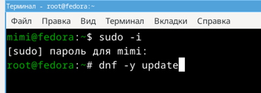
Установливаю программы для удобства работы в консоли:
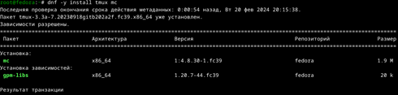
Установливаю программного обеспечения для автоматического обновления:
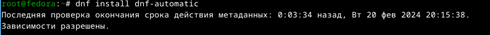
Запускаю таймер:
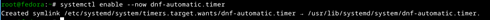
В файле /etc/selinux/config заменяю значение SELINUX=enforcing на значение SELINUX=permissive. Перегрузаю виртуальную машину:
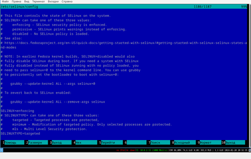
Вхожу в ОС под заданной мной при установке учётной записью. Нажимаю комбинацию Win+Enter для запуска терминала. Запускаю терминальный мультиплексор tmux, переключаюсь на роль супер-пользователя используя sudo -i и установляю средства разработки:
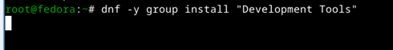
Установливаю пакет DKMS используя dnf -y install dkms. В меню виртуальной машины подключаю образ диска дополнений гостевой ОС. Подмонтирую диск mount /dev/sr0 /media
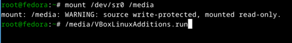
Далее установливаю драйвера указав /media/VBoxLinuxAdditions.run и перегружаю виртуальную машину.
Вхожу в ОС под заданной мной при установке учётной записью. Нажимаю комбинацию Win+Enter для запуска терминала. Запускаю терминальный мультиплексор tmux. Создаю конфигурационный файл. Переключаюсь на роль супер-пользователя с помощью sudo -i и отредактирую конфигурационный файл /etc/X11/xorg.conf.d/00-keyboard.conf. После этого перегружаю машину:
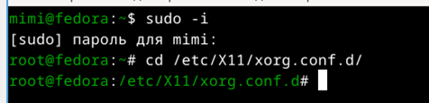
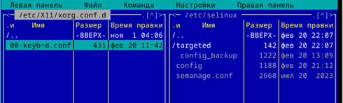
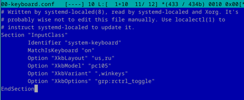
Запукаю виртуальную машину и залогинуюсь. Нажимаю комбинацию Win+Enter для запуска терминала. Запускаю терминальный мультиплексор tmux. Переключаюсь на роль супер-пользователя. Создаю пользователя (вместо username указиваю мой логин в дисплейном классе) и задаю пароль для пользователя:
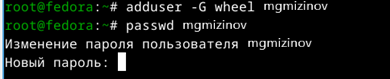
Проверяю, что имя хоста установлено верно:
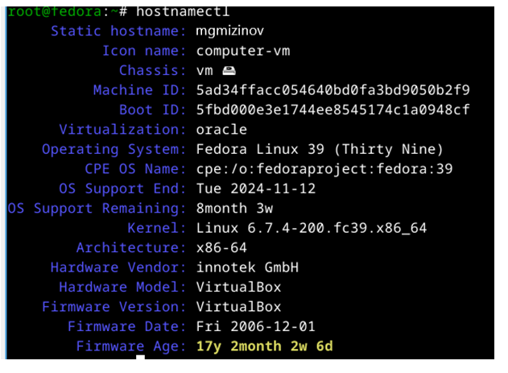
Нажимаю комбинацию Win+Enter для запуска терминала. Запускаю терминальный мультиплексор tmux и переключаюсь на роль супер-пользователя:
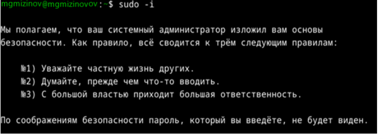
Установливаю pandoc с помощью менеджера пакетов:
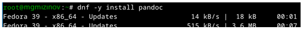
Установливаю TexLive с помощью менеджера пакетов:
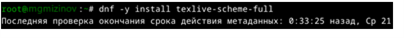
При выполнении проделанной работы я приобретел практические навыки установки операционной системы на виртуальную машину, настройки минимально необходимых для дальнейшей работы сервисов.